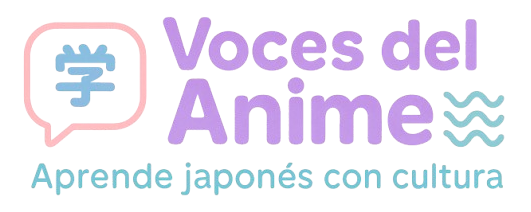

Subtítulos multilingües
Cambiá entre japonés, rōmaji, español e inglés sin detener el video. Ideal para comparar estructuras y expresiones.

Empezá a explorar japonés a través de escenas de anime: audio, subtítulos y diccionario en una sola pantalla.
Probá la experiencia completa: reproducí una escena, activá pistas y hacé clic en las palabras japonesas.
Tocá ▶ para iniciar. Podés alternar pistas, ajustar velocidad y usar el diccionario emergente sobre las palabras japonesas.
Cambiá entre japonés, rōmaji, español e inglés sin detener el video. Ideal para comparar estructuras y expresiones.
Mostrá lectura solo sobre los kanji cuando lo necesites, para no depender siempre de los silabarios.
Tocá una palabra japonesa o en rōmaji y aparece un panel flotante con lectura, significado, formas y ejemplos.
Al pasar por el texto, se resalta el fragmento equivalente en japonés y en rōmaji para fijar correspondencias.